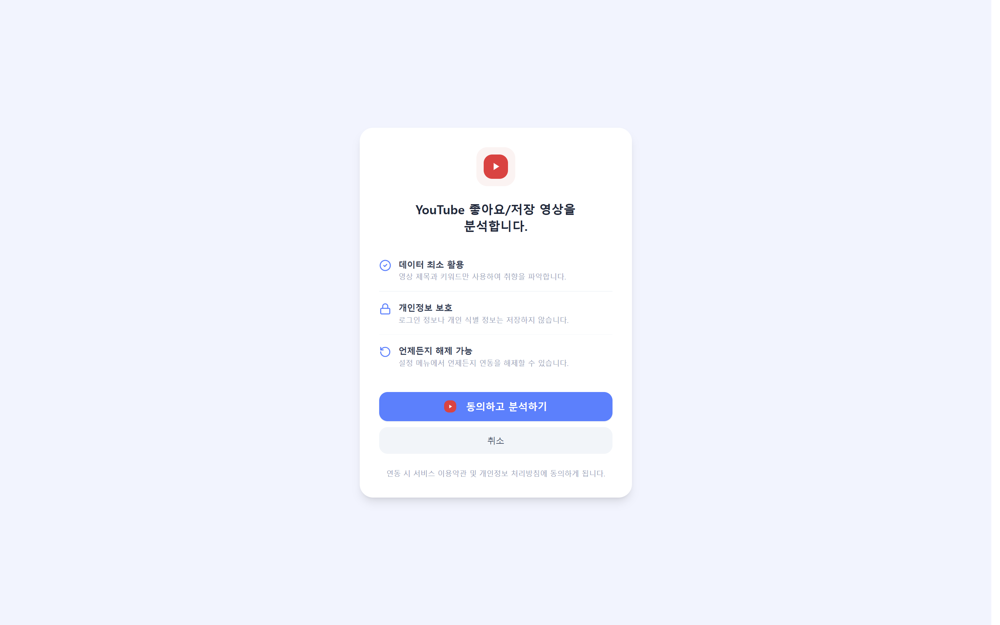
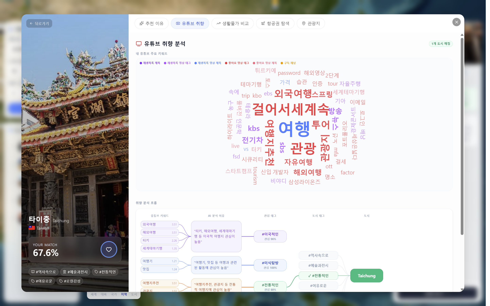
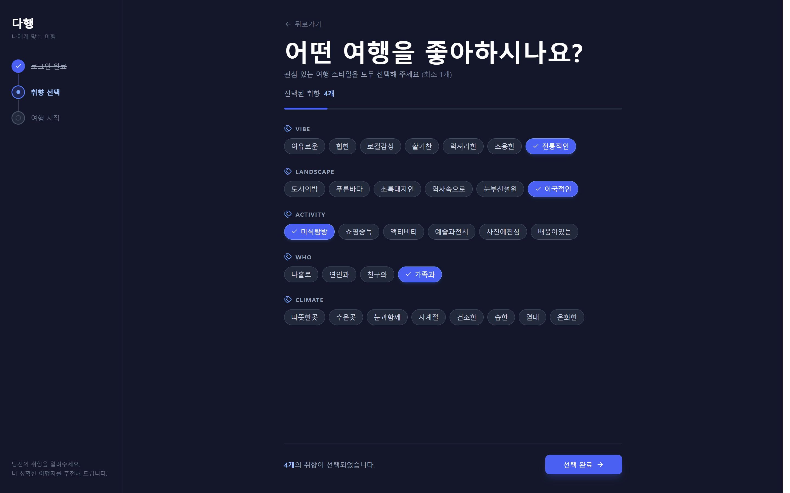

Project 02
다행
YouTube 취향 분석 기반 AI 여행 추천 서비스
프로젝트 소개
다행은 Google·YouTube 연동으로 사용자의 시청 취향을 분석해, 취향에 맞는 여행 도시와 추천 근거를 제시하고 물가·항공권 비교까지 한 흐름으로 잇는 AI 여행 추천 서비스입니다.




기술 스택
담당 업무
다음 영역의 설계와 구현을 담당했습니다.
- YouTube 관심사 분석 파이프라인 영상 제목·키워드 수집 → 정제 · 정규화 · 토큰화 → 점수화 → AI용 상위 60개 키워드 선별
-
Spring AI 여행 태그 추론
Spring AI
ChatClient로 키워드를 여행 태그(Vibe·Activity·Who·Climate)로 추론 · 추천 근거 함께 생성 - 근거 기반 태그 검증 · 재랭킹 태그별 증거 키워드 패턴으로 신뢰도 보정 후 카테고리별 상위 태그 선정
- Google OAuth 인증 Google 소셜 로그인 · JWT Access/Refresh 토큰 발급·재발급
-
태그 저장 구조
tag_id기반 정규화 저장 · member_tag 연동 · 수동/YouTube 태그 중복 병합(upsert) - AWS S3 · 배포 인프라 도시·국가 이미지 S3 업로드 · Docker Compose · Nginx HTTPS 리버스 프록시 · AWS EC2 배포
트러블슈팅: 관심사 분석 파이프라인의 트랜잭션 경계 분리
긴 분석 흐름을 한 트랜잭션으로 묶어 외부 AI 응답 대기 동안 DB 커넥션이 점유됨
관심사 분석은 YouTube 데이터 수집·정제 → AI 추론 → 검증 → 저장으로 이어지는 긴 작업입니다. 초기 구현은 이 흐름 전체(analyze())를 하나의 @Transactional로 묶었고, 그 안에 외부 LLM 추론 호출이 포함돼 있었습니다. AI 추론이 수 초간 진행되는 동안 DB 커넥션이 반납되지 않아, 동시 분석 요청이 늘수록 커넥션 풀이 외부 AI 응답 대기에 묶여 고갈될 위험이 있었습니다.
분석 흐름을 4단계로 나누고 오케스트레이터(InterestAnalysisService)가 트랜잭션 경계를 직접 관리 — 키워드 추출(짧은 read-only 트랜잭션) → AI 추론(트랜잭션 없음) → 근거 검증(트랜잭션 없음) → 결과 저장(짧은 write 트랜잭션)
DB를 실제로 접근하는 구간에만 트랜잭션을 두고, 외부 AI 호출 구간에서는 커넥션을 반납해 커넥션 풀이 LLM 지연에 묶이지 않도록 설계
리팩토링 후 분석 파이프라인이 단계별 로그와 함께 정상 동작함을 확인 — AI 추론 구간이 트랜잭션 경계 밖으로 분리됨
트러블슈팅: AI 추론 태그의 근거 기반 검증과 재랭킹
증거가 부족한 AI 태그를 무조건 제거(하드 리젝)해 추천 카테고리가 비는 문제
AI가 추론한 여행 태그를 그대로 신뢰하지 않고 사용자 키워드에 증거가 있는지 검증했습니다. 초기 검증은 증거 키워드가 없으면 태그를 통째로 제거하는 방식(하드 리젝)이었는데, AI가 맥락상 맞게 추론했더라도 표면 키워드가 잡히지 않으면 태그가 사라져, 특정 카테고리(Who·Climate)가 통째로 비는 경우가 생겼습니다.
제거 대신 증거 적합도(evidenceFit)를 점수에 반영하는 재랭킹으로 전환 — 증거가 약한 태그는 페널티를 받아 score = 기존점수 × 0.8 + 증거적합도 × 0.2로 재계산
태그별 증거 키워드 패턴을 정규식 카탈로그로 정의하고, Who·Climate 카테고리는 더 강한 페널티를 적용해 카테고리별 상위 3개 태그를 선정
TravelTagValidator 단위 테스트로 페널티 적용 · 카테고리별 정렬 · 상위 선정 동작을 검증
고찰
외부 AI를 서비스 흐름에 넣을 때, 응답 시간이 긴 호출은 트랜잭션·커넥션 같은 한정 자원과 분리해야 한다는 점을 체감한 작업이었습니다. 또한 AI의 출력은 그대로 신뢰하기보다 사용자 데이터로 검증하되, 제거가 아니라 가중치로 보정하는 편이 결과의 안정성과 설명력을 함께 지킨다는 것을 확인했습니다.